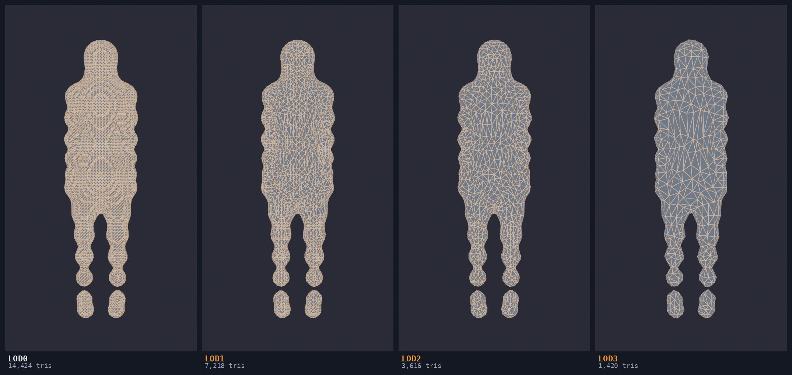
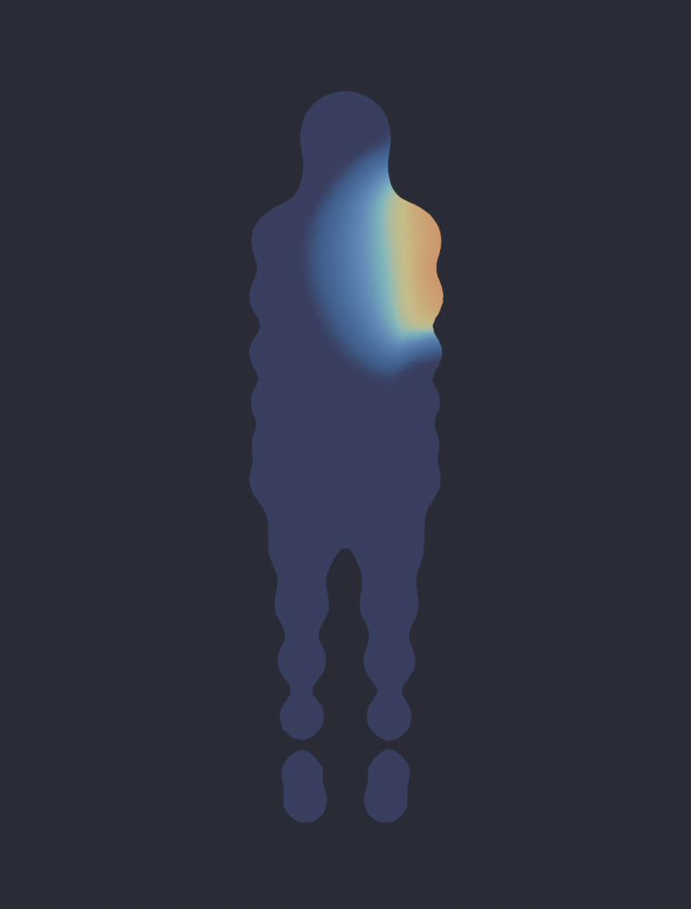
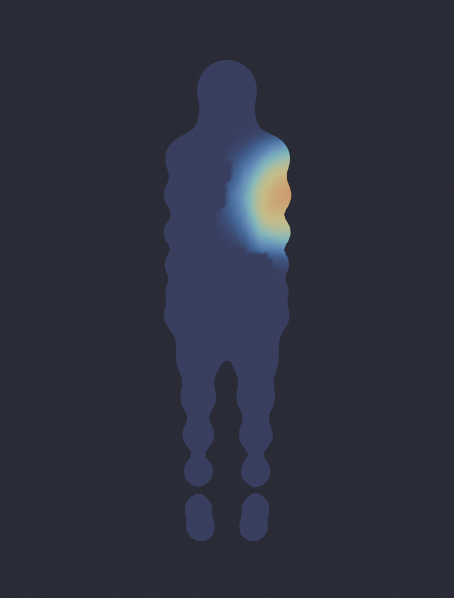
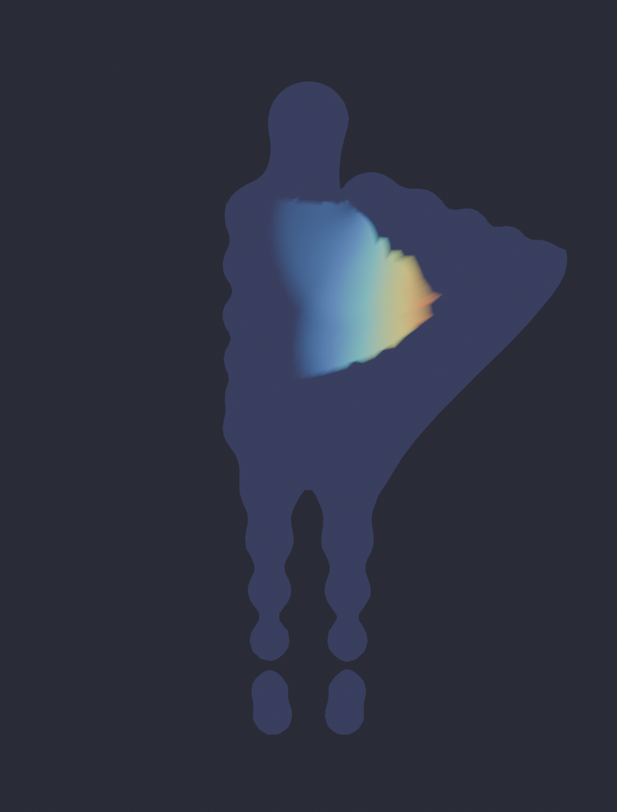
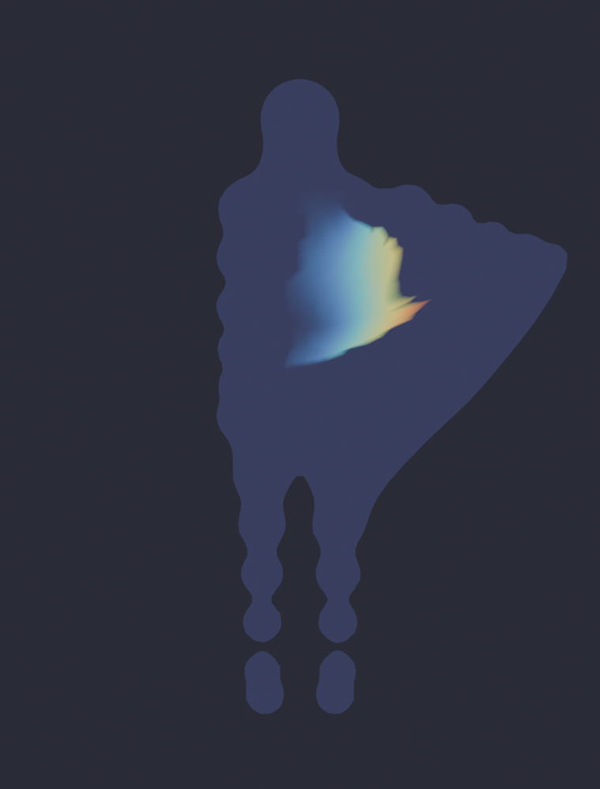

Two add-ons for rigged characters, and the measurement rig they were built against. Every figure here came out of that rig, including the ones that go the wrong way.
LOD chains from rigged, shape-keyed characters, to exact triangle budgets, with vertex groups and blend shapes intact.
Blender will not do this. Ask it to apply a Decimate modifier to a character that has shape keys and it stops:
So the artist strips the blend shapes first, and then the second problem arrives. Decimating a 7,234-face character at ratio 0.4 leaves 2,712 of 2,895 vertices with weights that no longer sum to 1.0, 331 vertices past the four-influence limit game engines enforce, and a maximum of seven influences on a single vertex. The mesh is smaller and the rig is broken.
This add-on captures the weights and the shape key deltas before touching the topology, reduces, then maps both back onto the new vertices by inverse-distance blend from the nearest source vertices, and renormalises under the influence cap. Triangle budgets are hit by binary-searching the decimate ratio, because Blender's ratio acts on triangles and a ratio derived from a face count misses badly on quad and n-gon meshes.

| Level | Budget | Actual | Budget error | Groups | Shape keys | Unnormalised | Over 4 | Deform error |
|---|---|---|---|---|---|---|---|---|
| LOD1 | 7,176 | 7,182 | 0.1% | 17 / 17 | 4 / 4 | 0 | 0 | 2.70% |
| LOD2 | 3,588 | 3,597 | 0.3% | 17 / 17 | 4 / 4 | 0 | 0 | 2.78% |
| LOD3 | 1,721 | 1,693 | 1.6% | 17 / 17 | 4 / 4 | 0 | 0 | 2.86% |
Four characters, three levels each, twelve LOD builds with full metrics in 4.3 seconds. Deform error is mean nearest-point displacement against the source mesh across three test poses, as a percentage of body height.
Binding that measures distance along the surface instead of through the air, and an honest account of what that buys.
Blender binds with bone heat diffusion, which travels through space. When a limb rests near the body the weight leaks across the air gap, and the chest drags when the arm lifts. It is a standing forum complaint with no number attached to it, so the first job was to produce the number: rotate one arm bone 1.2 radians and count torso vertices that move. There is no legitimate mechanism by which rotating an arm should move the sternum.




| Binding | Torso bleed | Joint jaggedness | Unnormalised | Over 4 influences |
|---|---|---|---|---|
| Bone heat, untouched | 62.88% | 1.83 | 33,885 | 5,190 |
| Bone heat + Limit Total + Normalize All | 60.88% | 1.87 | 0 | 0 |
| Geodesic + surface smoothing | 44.77% | 2.17 | 0 | 0 |
Twenty character builds, five metrics each, ten seconds. Jaggedness is the 99th percentile displacement difference between neighbouring vertices when the elbow bends; lower is smoother, and it is the check that catches a method cheating by snapping every vertex to one bone.
The middle row is the row that matters. Blender's own two operators, run in the correct order, fix weight validity completely and do almost nothing for bleed, so the honest comparison is against that and not against the untouched bind. Against it, geodesic binding removes 26.5% of the bleeding vertices and pays for it with joint deformation 16% rougher.
That trade is the open problem. Uniform Laplacian smoothing restores the blend at the joint but undoes the geodesic separation at the same rate, because it does not know where one bone's region ends. Smoothing constrained to region boundaries is the fix; bounded biharmonic weights are the published form of it.
The measurement rig both tools were built against. Headless, no GUI, nobody looking at anything.
A head-to-head of two binding methods across twenty characters takes ten seconds; a full LOD chain benchmark takes four. Every number on this page can be re-derived on demand rather than measured once and quoted forever.
Both caught by the bench before anything was published. A portfolio that shows only the wins is not evidence of method.